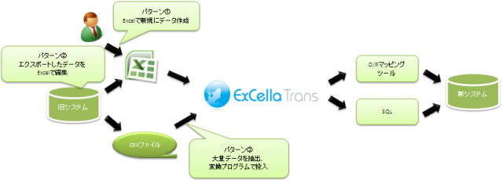

ExCella Transはデータ移行やテストデータなどExcel上で定義したデータの永続化をサポートするツールです。
特徴
データ移行を一括管理
新たに作成するデータや、エクスポートしたデータ、旧システムへ接続して取得したデータなど、形式の異なるデータを順序を制御しつつデータ移行を行うのは大変な作業です。
ExCella Transでは、これらの移行に伴う処理をExcel定義に従って行い、処理結果はSQLもしくはJavaオブジェクトとして取得できます。
任意の出力処理を設定可能
出力処理を設定する事で、取得したSQLのJDBC経由での実行や、JavaオブジェクトのO/Rマッピングツールでの永続化など、データの投入までを一元的に管理する事ができます
イメージ図
